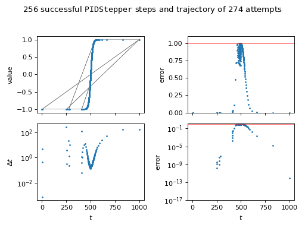

steppyngstounes.pidStepper¶
Classes
- class steppyngstounes.pidStepper.PIDStepper(start, stop, size=None, minStep=None, inclusive=False, record=False, limiting=True, proportional=0.075, integral=0.175, derivative=0.01)¶
Bases:
StepperAdaptive stepper using a PID controller.
Calculates a new step as
\[\Delta_{n+1} = \left(\frac{e_{n-1}}{e_n}\right)^{k_P} \left(\frac{1}{e_n}\right)^{k_I} \left(\frac{e_{n-1}^2}{e_n e_{n-2}}\right)^{k_D} \Delta_n\]where \(\Delta_n\) is the step size for step \(n\) and \(e_n\) is the error at step \(n\). \(k_P\) is the proportional coefficient, \(k_I\) is the integral coefficient, and \(k_D\) is the derivative coefficient.
On failure, retries with
\[\Delta_n = \mathrm{min}\left(\frac{1}{e_n}, 0.8\right) \Delta_n\]Based on:
@article{PIDpaper, author = {A. M. P. Valli and G. F. Carey and A. L. G. A. Coutinho}, title = {Control strategies for timestep selection in finite element simulation of incompressible flows and coupled reaction-convection-diffusion processes}, journal = {Int. J. Numer. Meth. Fluids}, volume = 47, year = 2005, pages = {201-231}, doi = {10.1002/fld.805}, }
- Parameters:
start (float) – Beginning of range to step over.
stop (float) – Finish of range to step over.
size (float) – Suggested step size to try (default None).
inclusive (bool) – Whether to include an evaluation at start (default False)
record (bool) – Whether to keep history of steps, errors, values, etc. (default False).
limiting (bool) – Whether to prevent error from exceeding 1 (default True).
minStep (float) –
Smallest step to allow (default (stop - start) * eps).
proportional (float) – PID control \(k_P\) coefficient (default 0.075).
integral (float) – PID control \(k_I\) coefficient (default 0.175).
derivative (float) – PID control \(k_D\) coefficient (default 0.01).
Examples
>>> import numpy as np >>> from steppyngstounes import PIDStepper
We’ll demonstrate using an artificial function that changes abruptly, but smoothly, with time,
\[\tanh\frac{\frac{t}{t_\mathrm{max}} - \frac{1}{2}} {2 w}\]where \(t\) is the elapsed time, \(t_\mathrm{max}\) is total time desired, and \(w\) is a measure of the step width.
>>> totaltime = 1000. >>> width = 0.01
The scaled “error” will be a measure of how much the solution has changed since the last step, | new - old | / errorscale).
>>> errorscale = 1e-2
Iterate over the stepper from start to stop (inclusive of calculating a value at start).
>>> old = -1. >>> stepper = PIDStepper(start=0., stop=totaltime, inclusive=True, ... record=True) >>> for step in stepper: ... new = np.tanh((step.end / totaltime - 0.5) / (2 * width)) ... ... error = abs(new - old) / errorscale ... ... if step.succeeded(value=new, error=error): ... old = new
>>> s = "{} succesful steps in {} attempts" >>> print(s.format(stepper.successes.sum(), ... len(stepper.steps))) 256 succesful steps in 274 attempts
>>> steps = stepper.steps[stepper.successes] >>> ix = steps.argsort() >>> values = stepper.values[stepper.successes][ix] >>> errors = abs(values[1:] - values[:-1]) / errorscale
Check that the post hoc error satisfies the desired tolerance.
>>> print(max(errors) < 1.) True
(
Source code,png,hires.png,pdf) - property errors¶
ndarray of the “error” at each step attempt.
The user-determined “error” scalar value (positive and normalized to 1) at each step attempt is passed to
Stepperviasucceeded().
- next()¶
Return the next step.
Note
Legacy Python 2.7 support.
- Return type:
- Raises:
StopIteration – If there are no further steps to take
- property sizes¶
ndarray of the step size at each step attempt.
- property steps¶
ndarray of values of the control variable attempted so far.
- succeeded(step, value=None, error=None)¶
Test if step was successful.
Stores data about the last step.
- Parameters:
step (
Step) – The step to test.value (float, optional) – User-determined scalar value that characterizes the last step. Whether this parameter is required depends on which
Stepperis being used. (default None).error (float, optional) – User-determined error (positive and normalized to 1) from the last step. Whether this parameter is required depends on which
Stepperis being used. (default None).
- Returns:
Whether step was successful.
- Return type:
bool
- property successes¶
ndarray of whether the step was successful at each step attempt.
- property values¶
ndarray of the “value” at each step attempt.
The user-determined scalar value at each step attempt is passed to
Stepperviasucceeded().
{kind=link}
{kind=link}